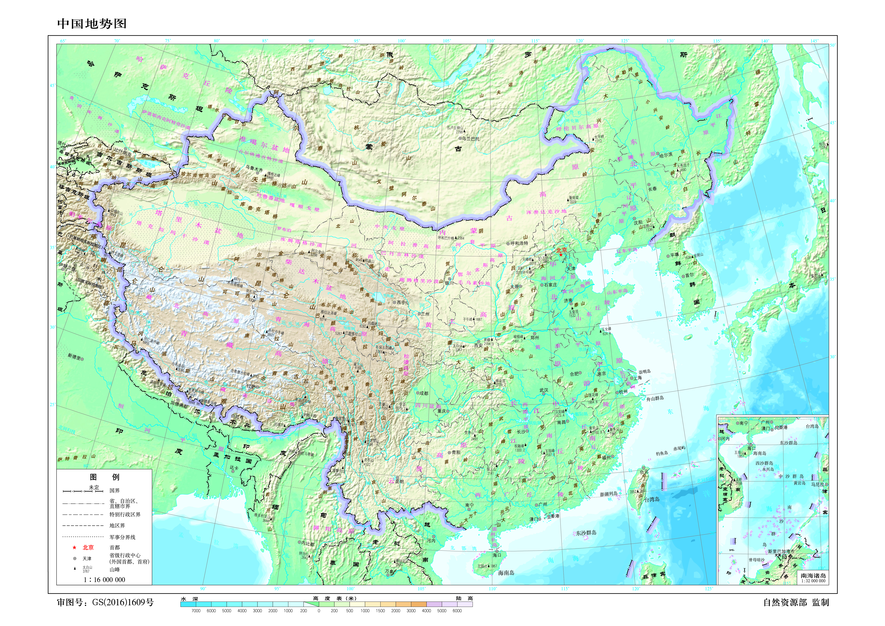

Select only labelled graticule intersections in the terrain map's main frame. This records source-image pixels paired with WGS84 coordinates and expected V coordinates. It does not alter the JPG, official SVG, or any geographic geometry.
